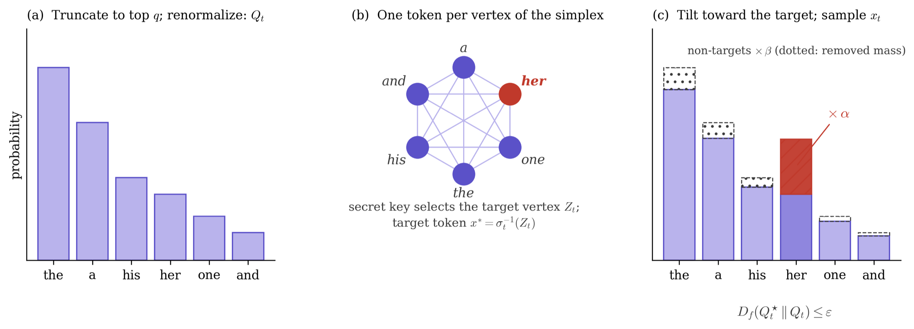
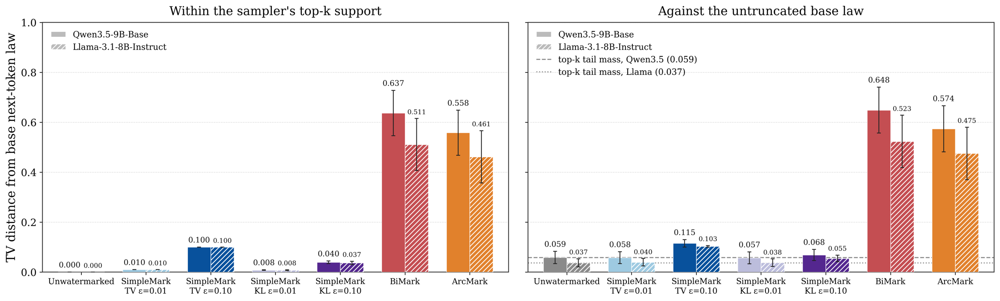
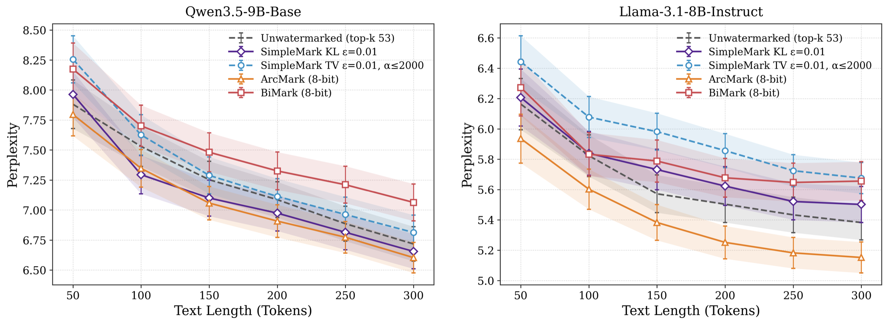
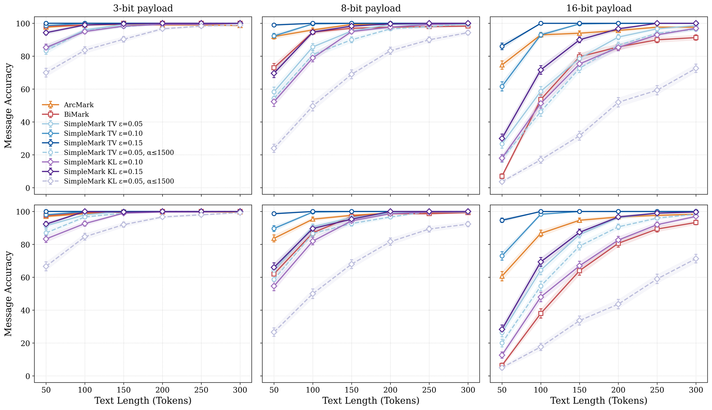
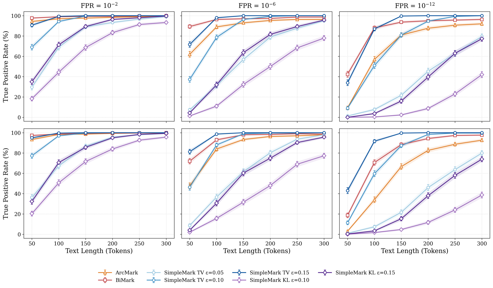
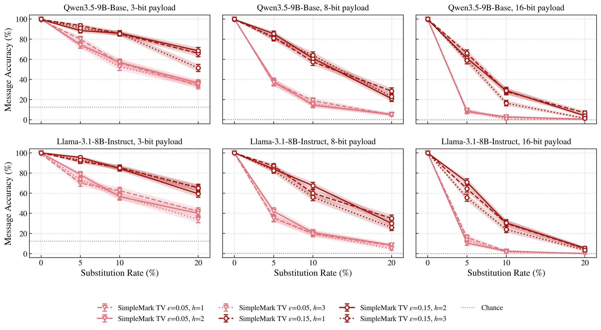

SimpleMark: Fast Multi-Bit Text Watermarking under f-Divergence Constraints
arXiv preprint, October 2026
I have been working on this project in collaboration with UIUC and Amazon AGI.
1The secret key picks a target word
2Tilt toward it, by at most ε
3Sample a word, repeat
Try it: hide a 3-bit message in a story (simplified)
A language model writes a story one word at a time. SimpleMark nudges each choice toward one secret target word, spending at most a budget ε (with TV, at most ε of probability mass moves), so an outsider can barely tell while someone holding the key can read the message back. TV caps what any detector can learn from a word; KL caps the perplexity cost instead. Pick a message, set a budget, and press Next word.
Encoder: tilt the next-word distribution
Decoder: which message explains the words?
Generated text
TL;DR
We study multi-bit watermarking of language-model text (hiding a message such as a user or model ID in generated text) as communication over a constrained channel, and introduce SimpleMark, a watermark with three properties:
- Security is a knob you set. Every next-token distribution the watermarked model samples from stays within an f-divergence budget ε (total variation or KL) of the (top-q truncated) base model, for the actual key and message in use, a stronger guarantee than existing multi-bit schemes provide. With TV, the best possible detector gains at most ε advantage per token.
- Embedding is closed-form and \(O_q(1)\). Putting a message symbol into a token is a two-number tilt of the next-token distribution: multiply the target token's probability by α and everything else by β. An error-correcting (LDPC) code protects the message and a maximum-likelihood decoder reads it back.
- The theory says what the budget buys. Exact per-key distortion-freeness forces zero capacity: no scheme can embed even one bit. A nonzero budget buys capacity, and we bound the achievable rate. Empirically SimpleMark is far less detectable than prior multi-bit schemes (ArcMark, BiMark) while staying competitive with them on message recovery, perplexity, and reasoning performance (at a TV budget of 0.15 it recovers the message from shorter texts than both; at the smallest budgets its decoder needs longer texts).
1. Why watermark text, and why with a message?
Large language models write fluent text at scale, which makes it hard to know where a piece of text came from. A text watermark is a way for the model provider to leave a statistical fingerprint in the sampling process: at each step the model slightly prefers some tokens over others, in a pattern driven by a secret key, so that someone who holds the key can later check for the pattern. The pattern is meant to be invisible to readers and to anyone without the key.
Providers are wary of changing their models' outputs, and the history of deployed text watermarks shows why. OpenAI built a text watermark for ChatGPT and then held it back for years: an internal survey found that nearly 30% of users said they would use ChatGPT less if its text were watermarked.[1] It announced in October 2026 that it would watermark ChatGPT and Codex text in the EU to comply with the EU AI Act's transparency rules, leaving the API watermark off by default elsewhere, and its own tests found that replacing a quarter of the words with synonyms cut detection to 17%.[2] Google DeepMind's SynthID-Text, deployed in Gemini since 2024, was built around a “non-distortionary” sampling mode and validated on roughly 20 million live responses specifically to show that users would not notice a difference.[3] Anthropic began watermarking Claude's text in August 2026 under the same EU rules, stressing that the mark does not change the meaning, quality, or readability of a response.[4] Meanwhile a whole category of tools exists to strip watermarks and “humanize” AI text, from research paraphrasers to commercial rewriters, and paraphrasing alone substantially weakens most deployed marks.[5],[6] The lesson for watermark design is that providers and users will only accept a mark whose effect on the text is provably small. The distortion a watermark introduces has to be a quantity you can bound and set in advance, not a side effect you measure afterward.
The first generation of LLM watermarks[7],[8],[9] is zero-bit: the detector answers one yes/no question, “did my model generate this text?” Many uses need more. A provider might want to recover which user, which model version, which timestamp, or which policy tag produced a text.[10],[11] That is multi-bit watermarking: the text carries a message.
Multi-bit watermarking has a built-in tension. Every bit you embed has to show up as some bias in the model's word choices. More bias makes the message easier to read back, but it also makes the text statistically different from unwatermarked text, which is exactly what an adversary looks for.[12],[13] The question we set out to answer is: how much information can you embed while staying within a prescribed distance of the unwatermarked model, and what notion of distance actually protects you?
2. What should “undetectable” mean?
Picture the adversary as a distinguisher: it looks at a token (or a whole text) and outputs “watermarked” or “not”. Its advantage is how much more often it says “watermarked” on watermarked samples than on clean ones. A classical fact from statistics and cryptography[14] is that the best possible distinguisher's advantage is exactly the total variation (TV) distance between the two distributions:
\[ \sup_{\mathcal D}\Big|\Pr_{X\sim P}[\mathcal D(X)=1]-\Pr_{X\sim Q}[\mathcal D(X)=1]\Big| \;=\; d_{\mathrm{TV}}(P,Q) \;=\; \tfrac12\sum_x |P(x)-Q(x)|. \]
So if we want a guarantee against every detector, including ones nobody has invented yet, bounding the TV distance between the watermarked next-token distribution and the base model's is the right target.
TV is one member of a larger family, the f-divergences, \(D_f(P\|Q)=\sum_x Q(x)\,f\!\big(P(x)/Q(x)\big)\) for a convex \(f\) with \(f(1)=0\). The same family contains the Kullback–Leibler divergence \(\mathrm{KL}(P\|Q)=\sum_x P(x)\log\frac{P(x)}{Q(x)}\), which matters for a different reason: it controls perplexity, the usual text-quality metric. If the watermarked model samples from \(P\) and we score the text with the base model \(Q\), then
\[ \mathrm{PPL} \;=\; \exp\!\big(\mathbb E_{x\sim P}[-\log Q(x)]\big) \;=\; e^{H(P)}\, e^{\mathrm{KL}(P\|Q)}, \]
where \(H(P)\) is the entropy of \(P\). Perplexity therefore splits into two factors: \(e^{H(P)}\), how unpredictable the watermarked text is on its own terms, and \(e^{\mathrm{KL}(P\|Q)}\), the excess factor the watermark adds through its extra log-loss under the base model. (Measured against unwatermarked text, whose perplexity is \(e^{H(Q)}\), the ratio is \(e^{H(P)-H(Q)}\,e^{\mathrm{KL}(P\|Q)}\), so a watermark that lowers entropy can even score below the base model, as ArcMark does on Llama in Section 5.) Either way, a KL budget directly bounds the \(e^{\mathrm{KL}(P\|Q)}\) factor, the excess log-loss the watermark adds under the base model; the entropy factor is not budgeted, so the realized perplexity ratio can sit above or below \(e^{\varepsilon}\). SimpleMark lets you choose which divergence to budget: TV when the priority is a hard cap on detectability, KL when it is text quality.
Security for the key you actually use
Most existing watermarks, including the strongest multi-bit schemes we compare against, come with weaker security guarantees than this: they bound one particular statistical distance, or hold only against a specific detector, or hold only in a relaxed sense that does not constrain the distribution a deployed model actually samples from. SimpleMark's guarantee is stated for the key and message in use, at every step, and for any f-divergence. Writing \(Q_t\) for the base model's next-token distribution at step \(t\), \(M\) for the message and \(V_t\) for the realized key value, SimpleMark is uniformly per-key ε-distortion-free:
\[ D_f\big(P_{X_t\mid M=m,\,V_t=v}\;\big\|\;Q_t\big)\;\le\;\varepsilon \qquad\text{for every } t,\ m,\ v. \]
Under a TV budget this says that no detector, however clever, gains more than ε advantage from any single token of SimpleMark text, whatever the key and message; under a KL budget it caps the excess log-loss the watermark adds under the base model. The budget is a design knob: a constant for a practical deployment, or cryptographically negligible when the application demands it. Setting ε = 0 gives perfect distortion-freeness, and Section 3 shows why that extreme carries no information at all.
Takeaway
SimpleMark's security is a per-token, per-key bound: for the actual key and message in use, the best possible detector gains at most ε advantage from any token under a TV budget. Section 5 measures this directly, and the realized advantage stays at or below ε.
3. Distortion is the price of embedding
If per-key closeness is the right goal, why not demand ε = 0? Because then nothing can be embedded. This is the channel-collapse result (Proposition 1 in the paper). Think of the watermark as a communication channel: the input is the target state \(Z_t\) (a function of the message and the key), the output is the sampled token \(X_t\), and the message is recoverable only if the sampled token tells the decoder something about the target. The mutual information \(I(Z_t;X_t)\) measures exactly that: how many bits seeing \(X_t\) reveals about \(Z_t\). With ε = 0 the distribution of \(X_t\) is \(Q_t\) no matter what the target is, so the token reveals nothing, \(I(Z_t;X_t)=0\), and no encoder–decoder pair can recover even one bit. The capacity \(C(\varepsilon)\), roughly the most bits per token any scheme can reliably embed under budget ε (in the paper's idealized memoryless model), is also continuous at zero, so “almost distortion-free” buys almost nothing.
Takeaway
Distortion is not a defect to engineer away; it is the price of embedding. The right design makes that price explicit and tunable, which is what a per-key f-divergence budget does.
How much does a budget buy? Theorem 1 is a converse, an upper bound that no scheme can beat: under a per-key TV budget ε, any sequence of schemes whose decoding error \(P_e^{(n)}\) vanishes must have rate (bits per token)
\[ R_n \;\le\; \frac1n\sum_{t=1}^n \tilde C_t(\varepsilon)\;+\;\frac{1+nR_nP_e^{(n)}}{n}, \]
where \(\tilde C_t(\varepsilon)\) is the largest mutual information \(I(Z_t;X_t)\) that any ε-feasible channel can create at step \(t\), and the second term is bookkeeping slack, \(1/n + R_nP_e^{(n)}\), that vanishes as the text grows and the error rate goes to zero. So in the limit the rate is capped by the average per-token capacity. In the simplest binary case (base distribution uniform on \(\{0,1\}\), two states that shift it by ±ε), the feasible mutual information is \(1-h_2(\tfrac12+\varepsilon)\), where \(h_2(p)=-p\log_2 p-(1-p)\log_2(1-p)\) is the binary entropy, the bits of uncertainty in a coin that lands heads with probability \(p\) (exactly 1 bit for a fair coin, less for a biased one). That comes to about 0.029 bits per token at ε = 0.1 and 0.119 at ε = 0.2, and \(\approx \tfrac{2}{\ln 2}\varepsilon^2\) for small ε. In this binary example the information grows quadratically in the budget: the first sliver of budget buys almost nothing, and each further increment buys more than the last. That slow start is not an artifact of the toy: for any fixed base distribution, every ε-feasible channel collapses onto \(Q_t\) as ε → 0, and the information available inside a TV ball of radius ε vanishes quadratically for small enough ε whatever the channel. What the toy understates is the constant. SimpleMark's own channel, where the key usually points at a low-probability token so that sampling it is strong evidence, is considerably more informative per unit of budget at the budgets we use. The paper works out only small examples in closed form (the binary coin, a ternary channel, and a single SimpleMark step over a three-token vocabulary; Appendix B.2), each a feasible channel whose information lower-bounds the per-step capacity, and leaves the general quantity \(\tilde C_t(\varepsilon)\) abstract.
4. SimpleMark, step by step
SimpleMark is designed so that the per-key guarantee holds by construction at every token, and so that the embedding step costs \(O_q(1)\): a constant that depends only on \(q\), not on the vocabulary size. The whole pipeline fits in one figure.

Step 1: encode the message with an error-correcting code
The message is \(k\) symbols, each a number in \(\{0,\dots,q-1\}\) (we use \(q=53\); choosing a prime makes arithmetic mod \(q\) a field, \(\mathbb F_q\), which is what the code needs). A low-density parity-check (LDPC) code, a standard error-correcting code with a public generator matrix \(G\), maps it to a length-\(n\) codeword \(C=m\cdot G\), one symbol per token to be generated. The code buys reliability, not secrecy: the secret is entirely in the key.
Step 2: turn the key into a target
At step \(t\), hashing the secret key together with the \(h\) previously generated tokens yields a shared secret \(S_t=(V_t,\sigma_t)\): a key value \(V_t\) uniform on \(\{0,\dots,q-1\}\) and a keyed bijection \(\sigma_t\) from the top-\(q\) tokens to the vertices of the simplex. Concretely: picture \(q\) labelled slots that are all equally far from one another (that is all “simplex” means here, and a “vertex” is one slot), and let \(\sigma_t\) be a secret, step-dependent shuffle that drops each of the \(q\) candidate tokens into its own slot. The target vertex is the slot selected by the message symbol \(C_t\), shifted by the secret key value \(V_t\):
\[ Z_t=(C_t+V_t)\bmod q, \]
and the target token is the one \(\sigma_t\) placed on it. Because \(V_t\) is uniform and secret, the target looks uniformly random to anyone without the key, while anyone holding the key can recompute it from the key and the preceding \(h\) tokens, so encoder and decoder never need to exchange anything beyond the text.
Step 3: tilt the distribution, optimally
We want to put as much probability as the budget allows on the target token. With the embedding cost \(d_t(x)=\mathbf 1[\sigma_t(x)\neq Z_t]\) (the discrete metric on the vertex set, since all vertices of a simplex are equidistant), the watermarked distribution is
\[ Q_t^\star\in\arg\min_{P\in\Delta(\mathcal S_t)}\ \sum_{x} P(x)\,d_t(x)\quad\text{s.t.}\quad D(P,Q_t)\le\varepsilon, \]
with \(D\) either \(d_{\mathrm{TV}}\) or \(\mathrm{KL}\). The cost is an indicator, so the objective depends on \(P\) only through the mass \(s\) it puts on the target. Let \(B\) be the base model's mass on the target. By the data-processing inequality any \(P\) with target mass \(s\) satisfies \(D(P,Q_t)\ge D(\mathrm{Bern}(s),\mathrm{Bern}(B))\), with equality when \(P\) keeps the base model's relative proportions inside the target and non-target groups. So the optimum is a two-scalar tilt:
The SimpleMark embedding rule
\[ Q_t^\star(x)=\begin{cases}\alpha_t\,Q_t(x), & \sigma_t(x)=Z_t\\[2pt] \beta_t\,Q_t(x), & \sigma_t(x)\neq Z_t\end{cases}\qquad \alpha_t=\frac{s^\star}{B},\quad \beta_t=\frac{1-s^\star}{1-B}, \]
where \(s^\star=B+\min(\varepsilon,1-B)\) for a TV budget, and for a KL budget \(s^\star\) is the unique root in \([B,1]\) of \(s\log\frac sB+(1-s)\log\frac{1-s}{1-B}=\varepsilon\) (or \(s^\star=1\) when \(\varepsilon\ge\log\frac1B\)). By construction \(d_{\mathrm{TV}}(Q_t^\star,Q_t)=s^\star-B\), which equals \(\min(\varepsilon,1-B)\le\varepsilon\) under the TV budget; under the KL budget it is \(\mathrm{KL}(Q_t^\star\|Q_t)=\varepsilon\) that is enforced instead, and the TV distance may exceed \(\varepsilon\).
That is the entire embedding step: one scalar equation per token, no iterative optimal-transport solve and no auxiliary sampling, which is where the “fast” in the title comes from. In practice we also cap \(\alpha_t\) at some \(\alpha_{\max}\), so that a token the model considers very unlikely never receives a huge boost. On the paper's reasoning traces (ε = 0.05, \(\alpha_{\max}=1500\)) the cap binds on roughly 91% of tokens. Capping makes it less likely that a very unlikely token gets sampled and derails a reasoning chain, and at this setting we observe no loss in reasoning accuracy (Section 5). The cap is not free: when it binds, the realized divergence is below ε and less information is embedded per token, which is why, in the message-recovery figure, the capped TV ε = 0.05 curve (dashed) trails the uncapped TV ε = 0.05 curve. (The capped KL ε = 0.05 curve has no uncapped counterpart there, so its gap to the KL ε = 0.10 and 0.15 curves mostly reflects the smaller budget.)
Step 4: decode by maximum likelihood
Given the text, the decoder replays the model to recover each \(Q_t\), recomputes \((V_t,\sigma_t)\) from the key and the preceding tokens, and for each possible code symbol \(a\) asks how likely the observed token \(x_t\) was under the tilt that symbol would have produced: \(L_t(a)=\log Q^\star_{t,a}(x_t)\). Summing along a candidate codeword gives a score for each candidate message,
\[ \Lambda(\hat m)=\sum_{t=1}^n L_t\big(C_t(\hat m)\big),\qquad \hat M=\arg\max_{\hat m}\Lambda(\hat m). \]
The decoder uses the same channel law as the encoder, so it is matched to it. This maximum-likelihood rule is exactly what the decoder panel in the demo above computes, with the scores shown as posterior probabilities under a uniform prior over the eight messages. The paper also mentions a lighter plurality decoder that works from the received symbols alone, without the model's likelihoods, but does not detail it.
5. Experiments
We evaluate on Qwen3.5-9B-Base and Llama3.1-8B-Instruct, generating 300 tokens per trial on C4-RealNewslike prompts at temperature 1.0 and evaluating prefixes of 50, 100, …, 300 tokens, with 300 trials per point. SimpleMark uses \(q=53\) (so top-53 sampling); the baselines use top-50 sampling and their authors' settings. The baselines are ArcMark[15] and BiMark[16], both with public implementations, state-of-the-art message recovery, and an (average-key) distortion-freeness guarantee. Use the tabs to explore each result.
How much can the best detector learn from one token? We estimate the next-token distribution of each scheme empirically (10 prompts × 10,000 samples per prompt) and compute its TV distance from the unwatermarked distribution, which is exactly the maximum advantage of any single-token distinguisher. Even the unwatermarked model shows a small nonzero value from sampling noise.

Perplexity. Since \(\mathrm{PPL}=e^{H(P)}e^{\mathrm{KL}(P\|Q)}\), a KL budget is a direct handle on the \(e^{\mathrm{KL}}\) factor, the part of perplexity the watermark controls. As expected, SimpleMark under a small KL budget tracks the unwatermarked perplexity most closely at every length.

Does the watermark hurt reasoning? We run Qwen3.5-9B in thinking mode (temperature 0.6) on GSM8K, GPQA-Diamond, LiveCodeBench, and AIME 2024, one sample per problem, identical problem sets for every scheme, embedding a 3-bit or 8-bit message at ε = 0.05 with \(\alpha_{\max}=1500\). Counts are problems solved.
| Scheme | GSM8K (300) | GPQA-D (198) | LCB (100) | AIME 2024 (30) |
|---|---|---|---|---|
| 3-bit payload | ||||
| SimpleMark TV (ε=0.05, αmax=1500) | 278 | 112 | 33 | 8 |
| SimpleMark KL (ε=0.05, αmax=1500) | 274 | 108 | 40 | 9 |
| BiMark | 270 | 107 | 33 | 11 |
| ArcMark | 272 | 111 | 35 | 10 |
| Unwatermarked | 272 | 110 | 36 | 8 |
| 8-bit payload | ||||
| SimpleMark TV (ε=0.05, αmax=1500) | 275 | 103 | 38 | 9 |
| SimpleMark KL (ε=0.05, αmax=1500) | 273 | 102 | 41 | 8 |
| BiMark | 279 | 94 | 33 | 8 |
| ArcMark | 274 | 109 | 40 | 7 |
| Unwatermarked | 272 | 110 | 36 | 8 |
Table 2 of the paper. LiveCodeBench is graded on public test cases only, so its counts are comparable across schemes but not to published leaderboards. Differences between schemes are within run-to-run noise at these sample sizes: the point is the absence of degradation. Llama3.1-8B-Instruct results (Table 3 in the paper) tell the same story.
Can we read the message back? We report message accuracy (the whole payload exactly right), since a single bit error can change the meaning of an ID. Under a TV budget of ε = 0.15 SimpleMark recovers the message from shorter texts than the baselines (higher accuracy at a given number of tokens; this is about how much text the decoder needs, not how long it takes to run), even though those baselines are designed to maximize recovery and pay for it with the large per-token deviations shown in the Detectability tab. The KL ε = 0.15 variant trails ArcMark over the first 100 tokens on the 8-bit payload and the first 150 tokens on the 16-bit payload before catching up by 200 tokens. At the smaller, more practical budgets it remains competitive: at ε = 0.05 an 8-bit message is recovered reliably within 200–300 tokens, and at ε = 0.01 the decoder simply needs more text (500–1000 tokens; an 8-bit message climbs from about 75% at 500 tokens to about 95% at 1000, and a 16-bit one from about 45% to about 87%, Figure 5 in the paper).

Zero-bit detection. True positive rate of the keyed detector as a function of text length at false positive rates of \(10^{-2}\), \(10^{-6}\) and \(10^{-12}\). Fast detection is not an unambiguous virtue: the keyed detector's power is fueled by the same distributional deviation an adversary can exploit. The baselines detect quickly precisely because their per-token deviations are large; SimpleMark caps that deviation at ε, so lower budgets detect more slowly by design.

Token substitution. We replace a percentage of the tokens of a 300-token output with random vocabulary words and try to decode. Recovery degrades roughly exponentially with the substitution rate, as expected from a keyed context hash: each substituted token corrupts its own symbol and desynchronizes the key for the next \(h\) positions.

Two more results live in the appendix. First, an ablation with \(q=29\) instead of 53 (simplex, LDPC field size, and top-\(k\) all shrunk together): perplexity stays close to the unwatermarked baseline at both sizes, and message recovery is similar at 3 and 8 bits, though at 16 bits \(q=29\) lags by up to roughly 25 points at 100–150 tokens for the smallest budgets. The GSM8K sweep over \(\alpha_{\max}\in\{200,500,1000\}\) (16-bit payload, Qwen3.5-9B-Base) shows that the cap matters. It is a harder setting than the reasoning table (base model rather than thinking mode, 16-bit rather than 3- or 8-bit, an unwatermarked accuracy of about 65% rather than 91%), and the sweep stops at \(\alpha_{\max}=1000\), so it does not test the \(\alpha_{\max}=1500\) operating point. Within it, TV ε = 0.05 accuracy falls as the cap loosens: for \(q=53\) from slightly above the unwatermarked model at \(\alpha_{\max}=200\) to roughly 5–9 points below at 500 and 1000, and for \(q=29\) from a few points below at 200 to 12–14 points below at 500 and 1000, while the ε = 0.01 runs and the KL runs stay within about five points of the baseline or above it. That is the empirical case for a tight cap. Second, long-form decoding at ε ∈ {0.01, 0.05} on 500–1000 tokens, where the decoder still recovers the message accurately.
6. Conclusion
Multi-bit text watermarking is a constrained communication problem, and the constraint should be stated for the key you actually use. Once it is, the picture is clean: exact per-key distortion-freeness gives zero capacity, a nonzero f-divergence budget buys a tunable rate–detectability tradeoff, and the optimal way to spend a budget on a single token is a two-number tilt. SimpleMark packages that tilt with an error-correcting code and a matched likelihood decoder. In experiments it cuts the best detector's per-token advantage from roughly 50% down to the budget ε, while keeping message recovery, perplexity, and reasoning performance competitive with the strongest prior schemes. We hope the framework gives designers of future watermarks a common yardstick: say what your ε is, and for which divergence.
Citation
If you find this work useful, please cite:
@misc{kim2026simplemark,
title = {SimpleMark: Fast Multi-Bit Text Watermarking under $f$-Divergence Constraints},
author = {Benjamin D. Kim and Wanrong Zhang and Weitong Ruan and Lav R. Varshney and Daniel Alabi},
year = {2026},
eprint = {2610.05712},
archivePrefix = {arXiv},
primaryClass = {cs.CR},
url = {https://arxiv.org/abs/2610.05712},
}References
- D. Seetharaman, M. Barnum. There's a Tool to Catch Students Cheating With ChatGPT. OpenAI Hasn't Released It. The Wall Street Journal, August 4, 2024.
- I. Mehta. OpenAI will start watermarking ChatGPT's text in the EU. TechCrunch, October 5, 2026.
- S. Dathathri, A. See, S. Ghaisas, et al. Scalable watermarking for identifying large language model outputs. Nature 634, 818–823, 2024.
- Anthropic. How Claude's text watermarking works. August 2026.
- K. Krishna, Y. Song, M. Karpinska, J. Wieting, M. Iyyer. Paraphrasing evades detectors of AI-generated text, but retrieval is an effective defense. NeurIPS 2023.
- Y. Cheng, V. S. Sadasivan, M. Saberi, S. Saha, S. Feizi. Adversarial Paraphrasing: A Universal Attack for Humanizing AI-Generated Text. 2025.
- J. Kirchenbauer, J. Geiping, Y. Wen, J. Katz, I. Miers, T. Goldstein. A Watermark for Large Language Models. ICML 2023.
- M. Christ, S. Gunn, O. Zamir. Undetectable Watermarks for Language Models. 2023.
- R. Kuditipudi, J. Thickstun, T. Hashimoto, P. Liang. Robust Distortion-free Watermarks for Language Models. TMLR 2024.
- A. Cohen, A. Hoover, G. Schoenbach. Watermarking Language Models for Many Adaptive Users. IEEE S&P 2025.
- W. Qu, W. Zheng, T. Tao, D. Yin, Y. Jiang, Z. Tian, W. Zou, J. Jia, J. Zhang. Provably Robust Multi-bit Watermarking for AI-generated Text. USENIX Security 2025.
- H. Zhang, B. L. Edelman, D. Francati, D. Venturi, G. Ateniese, B. Barak. Watermarks in the Sand: Impossibility of Strong Watermarking for Generative Models. ICML 2024.
- H. Chang, H. Hassani, R. Shokri. Watermark Smoothing Attacks against Language Models. Findings of EMNLP 2025.
- J. Katz, Y. Lindell. Introduction to Modern Cryptography, 2nd ed. Chapman & Hall/CRC, 2014.
- A. Gilani, S. Vithana, C. X. Long, O. Kosut, L. Sankar, F. P. Calmon. ArcMark: Distortion-Free Multi-Byte LLM Watermark via Optimal Transport. 2026.
- X. Feng, H. Zhang, Y. Zhang, L. Y. Zhang, S. Pan. BiMark: Unbiased Multilayer Watermarking for Large Language Models. ICML 2025.